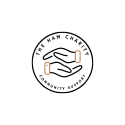

So who are we?
We are a nonprofit organization dedicated to improving the lives of those in need. Our team is passionate about making a positive impact in our community and we believe that everyone should have the opportunity to live a healthy, fulfilling life.
Our charity focuses on providing care to children who suffer with autism. We work tirelessly to raise awareness and funds for our cause, and we partner with other organizations to maximize our impact.
We are funded entirely by generous donations from individuals like you, and we rely on your support to continue our important work. Every contribution makes a difference and helps us to achieve our mission.
Thank you for considering supporting our charity. Together, we can make a real difference in the lives of those who need it most.
What services do we provide?
- 1: Early intervention programs: These programs are designed to help children with autism at a young age, when the brain is most receptive to learning. They may include speech therapy, occupational therapy, and other types of therapy to help children develop skills and improve their communication.
- 2: Educational support: Many children with autism benefit from specialized educational programs and support in the classroom. We provide resources and support for teachers to help them better understand and support children with autism.
- 3: Social skills groups: Children with autism may struggle with social interactions and communication.Our charity offers social skills groups to help children develop these skills and make friends.
- 4: Family support: Parents of children with autism may need support to navigate the challenges of raising a child with special needs. We provide resources and support for families, such as counseling, support groups, and information about financial assistance and other resources.
- 5: Advocacy: Our charity works to raise awareness about autism and advocate for the rights of individuals with autism and their families. This might include lobbying for better resources and support, or working to change attitudes and perceptions about autism.
- 6: Research: We also fund research into the causes and treatments of autism, with the goal of improving the lives of individuals with autism and their families.
